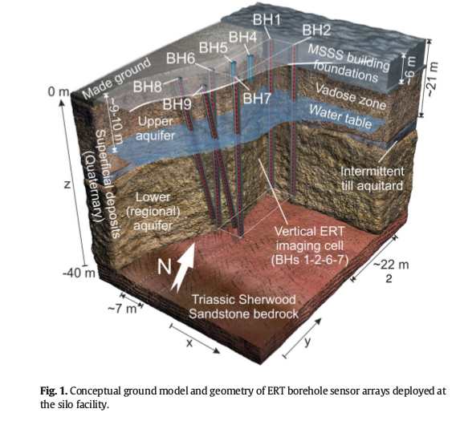

PhD thesis
Executive Summary.
Uncertainty in the subsurface characterisation of UK nuclear sites poses significant risks in terms of operational cost and environmental protection. Improved knowledge of the uncertainty of subsurface properties and processes is needed in order to enhance risk mitigation. Geophysical methods, such as electrical resistivity tomography (ERT), provides a cost-effective way to delineate variations in subsurface properties and monitor subsurface processes, however, the uncertainty in the results from such methods is often overlooked. A recent successful time-lapse ERT field trial conducted at Sellafield's Magnox Swarf Storage Silo (MSSS) highlights the potential of these methods [1] by showing 3D resistivity variations over time due to injection of saline tracer. This PhD projects explores various ways to better exploit information from ERT and to track the associated uncertainty in subsurface characterisation. This includes better understanding of the ERT data, and incorporating ancillary data sources to the ERT analysis.
We have studied the error structure in ERT data and proposed a new error model for geophysical measurements, which shows improved ERT inversion results and uncertainty estimation [2]. Recently, we have shown that there exists large variability in field petrophysical relationships and have developed a workflow quantifying the soil water content derived from ERT. Even though different petrophysical relationships give consistent estimates of the change in total moisture, the estimates have large uncertainty bounds. Our study also illustrates the joint use of coupled hydrogeophysical modelling and data assimilation to effectively estimate flow and transport properties in leak plumes. Our method proposes a range of hydrological models and then constrains them with time-lapse ERT data through data assimilation. Advantages of this method includes the flexibility to incorporate prior hydrogeological information and the ability to estimate flow and leak parameters of interest directly. The ensemble of hydrological model estimates also readily provides useful metrics for site management decisions, e.g. mass flux and mass discharge at any location or area within the model domain.
We have applied the above methods to the data collected from the Sellafield field trial and other sites. Overall, our work addresses NDA's needs by offering a suite of methods that can make geophysical methods more reliable and informative for site characterisation. Systematic application of ERT at NDA sites should contribute to a reduction in costs and risks in managing NDA's contaminated land portfolio.
References:
[1] Kuras et al. (2016) Science of the Total Environment. DOI: 10.1016/j.scitotenv.2016.04.212
[2] Tso et al. (2017) Journal of Applied Geophysics. DOI: 10.1016/j.jappgeo.2017.09.009
Tso, Chak-Hau Michael (2019). Enhancing the information content of geophysical data for nuclear site characterisation. Lancaster University PhD thesis. https://eprints.lancs.ac.uk/id/eprint/141574/1/2019tsophd.pdf